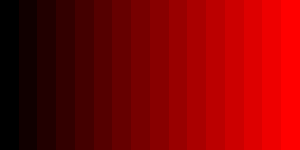

Cet article porte sur divers problèmes de précision dans WebGL2.
lowp, mediump, highpDans le premier article de ce site, nous avons créé un vertex shader et un fragment shader. Quand nous avons créé le fragment shader, il a été mentionné presque en passant qu’un fragment shader n’a pas de précision par défaut et nous devions donc en définir une en ajoutant la ligne
precision highp float;
De quoi s’agissait-il ?
lowp, mediump et highp sont des paramètres de précision. La précision dans ce contexte
signifie effectivement combien de bits sont utilisés pour stocker une valeur. Un nombre en
JavaScript utilise 64 bits. La plupart des nombres dans WebGL ne font que 32 bits. Moins de bits =
plus rapide, plus de bits = plus précis et/ou plus grande plage.
Je ne sais pas si je peux bien expliquer ça. Vous pouvez chercher
double vs float
pour d’autres exemples de problèmes de précision, mais une façon de l’expliquer est comme la
différence entre un byte et un short ou en JavaScript un Uint8Array vs un
Uint16Array.
Uint8Array est un tableau d’entiers non signés 8 bits. 8 bits peuvent contenir 28 valeurs de 0 à 255.Uint16Array est un tableau d’entiers non signés 16 bits. 16 bits peuvent contenir 216 valeurs de 0 à 65535.Uint32Array est un tableau d’entiers non signés 32 bits. 32 bits peuvent contenir 232 valeurs de 0 à 4294967295.lowp, mediump et highp sont similaires.
lowp est au moins une valeur de 9 bits. Pour les valeurs à virgule flottante, elles peuvent aller
de : -2 à +2, pour les valeurs entières, elles sont similaires à Uint8Array ou Int8Array
mediump est au moins une valeur de 16 bits. Pour les valeurs à virgule flottante, elles peuvent aller
de : -214 à +214, pour les valeurs entières, elles sont similaires à
Uint16Array ou Int16Array
highp est au moins une valeur de 32 bits. Pour les valeurs à virgule flottante, elles peuvent aller
de : -262 à +262, pour les valeurs entières, elles sont similaires à
Uint32Array ou Int32Array
Il est important de noter que toutes les valeurs dans la plage ne peuvent pas être représentées.
La plus facile à comprendre est probablement lowp. Il n’y a que 9 bits et donc seulement
512 valeurs uniques peuvent être représentées. Ci-dessus, il est dit que la plage est de -2 à +2, mais
il y a un nombre infini de valeurs entre -2 et +2. Par exemple 1.9999999
et 1.999998 sont 2 valeurs entre -2 et +2. Avec seulement 9 bits, lowp ne peut pas
représenter ces 2 valeurs. Donc par exemple, si vous voulez faire des calculs sur une couleur et
vous avez utilisé lowp, vous pourriez voir des bandes. Sans vraiment creuser quelles
valeurs réelles peuvent être représentées, nous savons que les couleurs vont de 0 à 1. Si lowp
va de -2 à +2 et ne peut représenter que 512 valeurs uniques, il semble probable
que seulement 128 de ces valeurs tiennent entre 0 et 1. Cela suggèrerait aussi que si vous avez
une valeur qui est 4/128ème et que j’essaie d’y ajouter 1/512ème, rien ne se passera
car 1/512ème ne peut pas être représenté par lowp donc c’est effectivement 0.
On pourrait juste utiliser highp partout et ignorer complètement ce problème
mais sur les appareils qui utilisent vraiment 9 bits pour lowp et/ou 16 bits pour
mediump, ils sont généralement plus rapides que highp. Souvent significativement plus rapides.
Sur ce dernier point, contrairement aux valeurs dans un Uint8Array ou Uint16Array, une valeur lowp
ou mediump ou même une valeur highp est autorisée à utiliser
une précision plus élevée (plus de bits). Donc par exemple sur un GPU de bureau, si vous mettez
mediump dans votre shader, il utilisera très probablement encore 32 bits en interne. Cela
a le problème de rendre difficile le test de vos shaders si vous utilisez lowp ou
mediump. Pour voir si vos shaders fonctionnent correctement avec lowp ou
mediump, vous devez tester sur un appareil qui utilise vraiment 8 bits pour lowp et
16 bits pour highp.
Si vous voulez essayer d’utiliser mediump pour la vitesse, voici quelques-uns des problèmes
qui surgissent.
Un bon exemple est probablement l’exemple des lumières ponctuelles,
en particulier le calcul du reflet spéculaire, qui passe des valeurs dans l’espace world ou view au fragment shader,
ces valeurs peuvent facilement sortir de la plage d’une valeur mediump. Donc, peut-être sur
un appareil mediump, vous pourriez simplement omettre les reflets spéculaires. Par exemple, voici
le shader de lumière ponctuelle de l’article sur les lumières ponctuelles
modifié pour mediump.
#version 300 es
-precision highp float;
+precision mediump float;
// Passé et varié depuis le vertex shader.
in vec3 v_normal;
in vec3 v_surfaceToLight;
in vec3 v_surfaceToView;
uniform vec4 u_color;
uniform float u_shininess;
// nous devons déclarer une sortie pour le fragment shader
out vec4 outColor;
void main() {
// parce que v_normal est un varying, il est interpolé
// donc ce ne sera pas un vecteur unitaire. Le normaliser
// en fera à nouveau un vecteur unitaire
vec3 normal = normalize(v_normal);
vec3 surfaceToLightDirection = normalize(v_surfaceToLight);
- vec3 surfaceToViewDirection = normalize(v_surfaceToView);
- vec3 halfVector = normalize(surfaceToLightDirection + surfaceToViewDirection);
// calculer la lumière en prenant le produit scalaire
// de la normale vers la direction inverse de la lumière
float light = dot(normal, surfaceToLightDirection);
- float specular = 0.0;
- if (light > 0.0) {
- specular = pow(dot(normal, halfVector), u_shininess);
- }
outColor = u_color;
// Multiplions juste la partie couleur (pas l'alpha)
// par la lumière
outColor.rgb *= light;
- // Ajouter simplement le spéculaire
- outColor.rgb += specular;
}
Note : Même ça ne suffit pas vraiment. Dans le vertex shader nous avons
// calculer le vecteur de la surface vers la lumière
// et le passer au fragment shader
v_surfaceToLight = u_lightWorldPosition - surfaceWorldPosition;
Disons que la lumière est à 1000 unités de la surface. On arrive ensuite dans le fragment shader et cette ligne
vec3 surfaceToLightDirection = normalize(v_surfaceToLight);
semble assez innocente. Sauf que la façon normale de normaliser un vecteur est de diviser par sa longueur et la façon normale de calculer une longueur est
float length = sqrt(v.x * v.x + v.y * v.y * v.z * v.z);
Si l’un de ces x, y ou z vaut 1000, alors 1000*1000 = 1000000. 1000000
est hors de la plage pour mediump.
Une solution ici est de normaliser dans le vertex shader.
// calculer le vecteur de la surface vers la lumière
// et le passer au fragment shader
- v_surfaceToLight = u_lightWorldPosition - surfaceWorldPosition;
+ v_surfaceToLight = normalize(u_lightWorldPosition - surfaceWorldPosition);
Maintenant les valeurs assignées à v_surfaceToLight sont entre -1 et +1 ce qui
est dans la plage pour mediump.
Notez que normaliser dans le vertex shader ne donnera pas réellement les mêmes résultats, mais ils pourraient être suffisamment proches pour que personne ne remarque sauf comparé côte à côte.
Des fonctions comme normalize, length, distance, dot ont toutes ce
problème que si les valeurs sont trop grandes, elles vont sortir de la plage
pour mediump.
Mais, vous devez vraiment tester sur un appareil pour lequel mediump est de 16 bits.
Sur le bureau, mediump est de 32 bits, comme highp, donc tout problème
ne sera pas visible.
mediump 16 bitsVous appelez gl.getShaderPrecisionFormat,
vous passez le type de shader, VERTEX_SHADER ou FRAGMENT_SHADER et vous
passez l’un de LOW_FLOAT, MEDIUM_FLOAT, HIGH_FLOAT,
LOW_INT, MEDIUM_INT, HIGH_INT, et il
[retourne les informations de précision].
gl.getShaderPrecisionFormat retourne un objet avec trois valeurs, precision, rangeMin et rangeMax.
Pour LOW_FLOAT et MEDIUM_FLOAT, precision sera 23 s’ils sont vraiment
juste highp. Sinon, ils seront probablement 8 et 15 respectivement ou
au moins ils seront inférieurs à 23. Pour LOW_INT et MEDIUM_INT,
s’ils sont les mêmes que highp, alors rangeMin sera 31. S’ils sont
inférieurs à 31, alors un mediump int est en réalité plus efficace qu’un
highp int par exemple.
Mon Pixel 2 XL utilise 16 bits pour mediump, il utilise aussi 16 bits pour lowp. Je ne suis pas sûr d’avoir jamais utilisé un appareil qui utilise 9 bits pour lowp, donc je ne suis pas sûr des problèmes qui surviennent couramment.
Tout au long de ces articles, nous avons spécifié une précision par défaut dans le fragment shader. Nous pouvons aussi spécifier la précision de n’importe quelle variable individuelle. Par exemple
uniform mediump vec4 color; // un uniform
in lowp vec4 normal; // un attribut ou entrée varying
out lowp vec4 texcoord; // une sortie de fragment shader ou sortie varying
lowp float foo; // une variable
Les textures sont un autre endroit où la spécification dit que la précision réelle utilisée peut être supérieure à la précision demandée.
À titre d’exemple, vous pouvez demander une texture 16 bits, 4 bits par canal comme ça
gl.texImage2D(
gl.TEXTURE_2D, // cible
0, // niveau mip
gl.RGBA4, // format interne
width, // largeur
height, // hauteur
0, // bordure
gl.RGBA, // format
gl.UNSIGNED_SHORT_4_4_4_4, // type
null,
);
Mais l’implémentation pourrait en réalité utiliser un format de résolution plus élevée en interne. Je crois que la plupart des bureaux font ça et la plupart des GPU mobiles ne le font pas.
On peut tester. D’abord, nous demanderons une texture de 4 bits par canal comme ci-dessus. Puis nous rendrons vers elle en rendant un dégradé de 0 à 1.
Nous rendrons ensuite cette texture vers le canvas. Si la texture est vraiment de 4 bits par canal en interne, il n’y aura que 16 niveaux de couleur dans le dégradé que nous avons dessiné. Si la texture est vraiment de 8 bits par canal, nous verrons 256 niveaux de couleurs.
En l’exécutant sur mon smartphone, je vois que la texture utilise 4 bits par canal (ou au moins 4 bits pour le rouge puisque je n’ai pas testé les autres canaux).

Alors que sur mon bureau, je peux voir que la texture utilise en réalité 8 bits par canal même si je n’en demandais que 4.
Une chose à noter est que par défaut WebGL peut tramater ses résultats pour rendre les gradations comme celle-ci plus douces. Vous pouvez désactiver le tramage avec
gl.disable(gl.DITHER);
Si je ne désactive pas le tramage, mon smartphone produit ceci.
D’emblée, le seul endroit où cela surgirait vraiment est si vous utilisiez une texture de format à résolution inférieure en bits comme cible de rendu et que vous ne testiez pas sur un appareil où cette texture est en réalité à cette résolution inférieure. Si vous ne testiez que sur le bureau, les problèmes que cela cause pourraient ne pas être apparents.